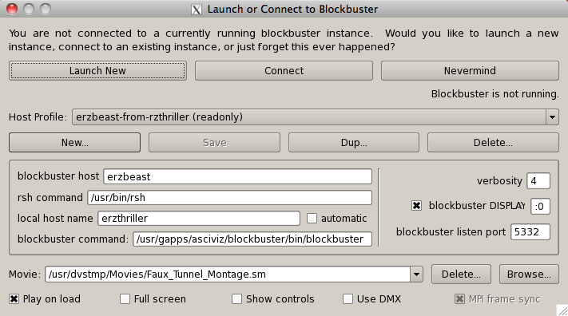
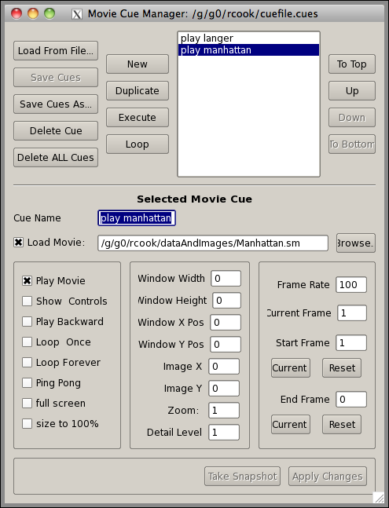

Suppose you want to present a streaming movie using blockbuster on a power wall, in conjunction with a prepared talk. You plan to start the movie and show the first frame for a few minutes while you introduce your subject. Then you will run the movie on a loop from frame 30 to frame 150 while you speak a while longer. You will then pause and talk some more.... etc. This process can be thought of as a series of cues, and that is what Sidecar does for you. The fact that sidecar talks to blockbuster on any remote node is useful since the blockbuster controls are very tiny on a large powerwall, and even reading, much less clicking those little buttons from a DMX screen can be tricky.
Usage
The sidecar interface should be intuitive and straightforward. You can launch sidecar with or without an argument, which is the name of a "cues file" to be opened. (See Cues below).
The first window you see if you don't open a cue file is the remote control window, with cues hidden. The hostname and port fields are used to connect to an instance of blockbuster. When blockbustert starts up, it prints out the port number it's listening on. This is different each time, for security purposes.
You can click "Launch" to launch an instance of blockbuster on the localhost or perhaps on a remote host, with or without using DMX. If you do, you will get the following dialog, which allows you to choose the flavor and location of blockbuster you want:

Note that password prompts are not handled yet, so the rsh command it must NOT prompt you for a password or sidecar will just hang there waiting. This is a known issue.
If you launch or connect to an instance of blockbuster, you can see that the remote control buttons are now active and usable. The frame rate (0 in the below image) is displayed next to the FPS setting.
If you click the "Connect Keyboard" checkbox, Sidecar recognizes and passes on all "native" blockbuster command keystrokes such as spacebar, +/-, left-right arrows, etc.. See the blockbuster documentation for a list of these and what they do. The various buttons at the top represent sidecar-specific commands that are also sent to blockbuster. Keyboard shortcuts:
| Ctrl-B | Go to Beginning |
| Ctrl-H | Halt play |
| Ctrl-P | Play movie |
| Ctrl-= | Advance by one frame (+1) |
| Ctrl - - | Retreat one frame (-1) |
| Ctrl - E | Go to final frame (End) |
| Ctrl- F | Go to frame number... |
| Ctrl-O | Open cues file... |
| Ctrl-S | Save cues |
| Alt-A | Save cues as... |
If you click on "Show Movie Cues..." the window expands to show the Movie Cues area of the dialog. You can hide this again with the "Hide Movie Cues" button.
Movie Cues
If you have loaded a cuefile, then the Cues window will look something like this:

Figure 3: Sidecar Cues window.
A movie cue can be thought of as a set of blockbuster commands. For example, you could have a cue that says, "Load mymovie.sm, then move to frame 38 and start playing at 12 fps, and keep looping."
Once you create a new cue and save its state with "Apply Changes," it becomes part of the list of cues and you can execute it, which makes it apply to the currently connected blockbuster. If you are not connected to blockbuster and click "Execute", you will be prompted to launch blockbuster. Multiple cues can be selected and executed. The Loop button will loop over the selected cues, playing them over and over in sequence. This can be handy for "standing demos" or kiosk type displays for events. While executing one or more cues, the Execute button turns into a "Stop Cues" button which stops all currently executing cues from being executed and returns sidecar and blockbuster to an idle state.
If you click "Save Cues" you will be prompted for a file name to save the cues to. The file must have the .cues extension to be readable by sidecar. Sidecar can then load the cues later, say at the beginning of your demo movie, either if you specify the cues file from the command line or by clicking "Load From File" button. Note that cues files are human-readable and editable and should be self-documenting. Just follow the same format as in the file and you'll be good to go.
You can change the order of the Cues in the list with the "Move" buttons.
Meaning of the cue attributes.
When you click on "Execute Cue," (only enabled if you are connected to blockbuster), then all of its attributes are turned into a sequence of commands to blockbuster. The attributes are as follows.
| Atribute | Meaning |
| Cue Name | A handy tag to make browsing cues easier. |
| Load Movie | If this box is checked, then upon cue execution, the movie given will be loaded before the other attributes are applied. If not, then executing the cue will apply the cue attributes to the current movie without loading a new one. |
| Play Movie: | Plays the movie. |
| Play Backward: | Play movie backward, when playing. This does NOT cause the movie to actually start playing, you also need to check "Play Movie" to do that. |
| Show Controls: | If you would like the blockbuster user interface to be visible when executing this cue, then check this box. If the box is unchecked, the controls will be hidden. |
| Loop Once: | Keeps playing the movie from start frame to end frame, then repeats once from the beginning to the end. |
| Loop Forever: | Keeps playing the movie from start frame to end frame, then over again beginning at start frame, etc. forever. |
| Ping Pong: | Play forward from start to end, then backward from end to start, then forward, then backward... I'm getting dizzy just thinking about it! |
| full screen: | If checked, the size fields are disabled and the movie will take the whole screen. |
| Frame Width/Height: | Height and width of the image canvas (the part of the window that holds the movie images), in pixels. -1 means to use the whole height or width available, and 0 means fit the canvas height or width to the movie image. |
| Frame X /Y : | Position of the window on screen. -1 means "don't move from where it's at right now." (0,0) is the upper left corner of the display screen. |
| Image X /Y : | Position of the image inside the screen relative tothe lower left corner of the window. Negative numbers are fine. |
| Frame Rate: | A floating point number that limits the number of frames per second the movie plays at. Blockbuster will try to play frames this fast, never faster, but will not skip over frames to meet the framerate, so it might not be possible to reach this number. -1 means "as fast as possible." |
| Zoom: | Zoom level for the image. 1.0 is no zoom. 0.5 is half size, 2.0 is twice normal size. |
| Frame Rate: | Sets the play speed in frames per second. |
| Current Frame: | Sets which frame the movie will be at after executing the cue. |
| Start/End Frame: | Which frame number (starting from 1) to play from or to. -1 means the end frame, -2 means the 2nd to last frame, etc. |
| Current: | Use the frame currently displayed in blockbuster for the Start or End frame |
| Reset: | For the Start frame, reset to 1. For the end frame, reset to the final frame. |
| Take Snapshot: | Fill in movie cue values using the current blockbuster view. |
| Apply Changes: | Saves the cue into the cue list. |
That's it! You are now ready to use sidecar with blockbuster.